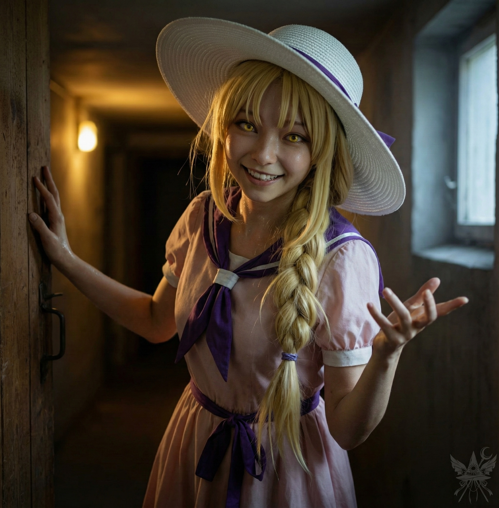

体を激しく揺さぶる衝撃と、耳元で張り上げる甲高い声。
「メデア！ メデア！ しっかりして！」
重く張り付いた瞼を押し上げると、視界の大部分を塞ぐように、切迫した顔が覆いかぶさっていた。鼻先が触れ合いそうなほどの至近距離で、瞬きもせずにこちらを覗き込んでいる。
肌にまとわりつく淀んだ空気と、オイルランプが燃える油の匂い。どこからかジャンクフードの安っぽい香りが漂い、鼻腔をくすぐる。ひんやりとした指先が手の甲に触れたことで、ようやくここが現世の、しかも極めて俗っぽい空間であることを脳が理解し始めた。
「……カナ？ なに……？」
掠れた声が喉から漏れる。ズキズキと痛む頭を押さえ、ゆっくりと上体を起こした。指先が触れた頬の感触で、天子の変身が解け、元の姿に戻っていることに気づく。粗い壁面と、鉄格子越しに射し込む薄暗い光。ルイズの地下アジトだ。
「ここ、ルイズの隠れ家よ。心配ないわ」
カナは安堵の息を吐き、少し距離を取った。
「シューニャの正体……わかったわ」
まだ混乱の残る頭を振り払い、昨夜の記憶を手繰り寄せる。カナが期待に片眉を吊り上げ、じっとこちらを見据えた。
「比那名居天子よ。龍神を追い出して、天界を乗っ取ろうとしているらしいわ」
「天子！？ まさか……直接会ったの？」
頷き、あの狂気の沙汰としか思えない問答を共有する。天子の主要チャクラを見誤り、手痛い敗北を喫したこと。そして最後に、痛烈な皮肉を込めて放った言葉も。
「『天子は良心を葬ったつもりでも、私はいつもあなたの心の中にいる。悪事は絶対に許さない』……とね」
それを聞いた瞬間、カナの瞳に嗜虐的な光が宿った。
「本当にそう言ったの！？ それで天子、まんまと騙されたわけ？」
「ええ。……でも、負けたのは腹立たしいわね」
「仕方ないわ。それにしても、メデアが天子の『良心』だなんてね。傑作だわ」
カナの乾いた笑い声が狭い部屋に響く。
少しの間を置き、深く沈み込むような悪夢の顛末を口にした。夢の世界を渡り歩く奇妙な少女、窓付きのこと。そして彼女が迎えた結末を。
カナの表情から、面白がる色がスッと引いた。
「……ハハ。これで私の計画も狂ったわ。最後の卵、渡すべきじゃなかった」
「狂った？ どういう意味？」
「エレンに拾われる前、意識が朦朧としていた時に……私、窓付きの世界に飛ばされちゃったのよ。あの時からずっと、あの世界を経由して他の世界を移動していた。でも、あの子が死んだってことは、あの世界も消滅したってこと。だってあそこは……あの子の妄想が生み出した世界だったんだから」
「でも、あの子は死んだらあそこに住めるって信じていたわ。自分のことを理解してくれる友達ができるって。それが……ただの幻想だったと？」
「そういうこと。そろそろ、この世界の本当の姿を理解した方がいいわね、メデア」
「挑発的ね。カナは世界の本当の姿を理解しているというの？」
カナは卓上に残っていた冷めた食事から茹でた玉ねぎを一つ摘み上げ、器用に指先で層を分け始めた。
「この世界を理解するには、『魂』と『体』っていう概念が重要になるわ。人間は死んだら魂が抜け出して、裁きを受けて天国か地獄に行く。そう言われているし、一部の仏教の教えはかなり核心を突いている。……で、魂って一体何だと思う？」
玉ねぎの薄皮を剥がし、虚空に透かしてみせる。
「魂があなたの『本質』？ 魂があなた自身？ そんなの思い上がりも甚だしいわ。意識と魂をごっちゃにするのはやめて。魂はもっと……物質的というか、目に見えないエネルギーの塊みたいなものよ。壊したり、バラバラにしたりできる。人間の首を刎ねたら、魂も首なし幽霊になるって知ってた？ 原子爆弾で魂を消し飛ばすことだってできるのよ。でもね、意識は無くならない。私たちは死と戦っていると思ってる？ 死なんてないのよ。そもそも存在しない。永遠なの、メデア」
その熱を帯びた語り口は、静かな狂気を孕んでいた。
「神と妖怪だけが不死。この世界が必要とする限り、何度でも蘇る。……ところで、死んだらみんなどうして三途の川の岸辺に行くと思う？ 閻魔は、死ぬ運命にあるすべての存在に『発信機』みたいなものを埋め込んでいるのよ。肉体が死ぬと、それが閻魔に『次の魂が到着しました』って知らせる。閻魔は魂を処理して、転生の順番待ちとして一時的に天国か地獄に送る。この世界に存在できる肉体には限りがあるから」
カナは指先の玉ねぎを放り投げ、淡々と続ける。
「あの世にいる間、死者は肉体を持たないアストラル体だけになる。人間は血管に血が流れて、内臓が動いているって自覚して満足しているけれど……激しい喜びや悲しみが胸を締め付けたり、考えすぎて頭が痛くなったりするのは、全部チャクラの働きなの。アストラル体の器官なんだから、心臓の鼓動と同じくらいリアルで当たり前のものよ」
「カナ、どうしてそんなに詳しいの？」
「ちょっとした趣味よ。本を読んだり、分析したり、色んな人と話したりとかね」
彼女の目は笑っていなかった。
「宇宙は複雑すぎて人間の理解を超えている。でも……私は絶対的な知識を信じているわ。『絶対的な真実なんてない』なんて言う連中は、真実から目を背けて諦めているだけ。真実は常に強者のものよ。他の連中は憶測で満足するしかないから、ただの駒として使われてしまう。この宇宙は残酷で、容赦ないのよ、メデア。陰謀は陰謀を生み、世界は腐敗していく」
「カナ、もしかして……」
言いかけた言葉を、カナの冷たい人差し指が唇に触れて遮った。
「被害妄想だって言わないで。ありきたりすぎるでしょ。とにかく、戦い続けよう。そのうち、被害妄想もまた、私たちを檻の中に閉じ込めるための策略だって気づくはずよ。陰謀論を信じる奴はただの馬鹿だってね。利用して、馬鹿にして、踏みつければいい。その間に陰謀家たちは好き勝手に世界を操る。……閻魔が転生するたびに前世の記憶を消すのはどうしてだと思う？ よく考えてみて」
これ以上の議論は今は無意味だ。そう判断し、話題を切り替える。
「わかった。戦い続けましょう。私が知っていることは全部話したわ。今度はカナの番。今の状況を教えて」
カナは小さな湯呑みに緑茶を注ぎ、こちらへ手渡した。一口啜り、息を整えてから彼女は話し始める。
「衣玖の話だと、龍神はキクリ主催の晩餐会に出席するため菊界へ行ったらしいわ。神綺も同席する創造主たちの集まりだって。衣玖には話が通じたと思う。龍神の息子に会わせてほしいって頼んだら、そもそもいないことに気づいてかなり慌てていたわ。『閻魔がそんなことするはずない』ってね」
ふふ、とカナは意地の悪い笑みをこぼす。
「街の騒動と息子の誘拐、どっちを優先すべきか迷っていたみたいだけど、結局菊界には使い魔を送ったらしいの。衣玖が有頂天市へ行く準備をして、龍宮の門を閉めようとしたまさにその時……月の姉妹が襲撃してきたのよ。メデア、作戦通りね！」
興奮した様子で身を乗り出してくる。
「急いで塔に登って見ていたら、すごい戦いだった。意外にも衣玖は強くて、護衛や兵士が駆けつける頃には姉妹を龍神島から追い払っていたわ。その隙に、私は宮殿中を探し回ったの。引き出し、書類棚、図書室……誰もいないも同然だったからやりたい放題！ で、メデア、見て！ これ！」
【天界土地賃貸借契約書】
契約書番号：第15号
賃貸人である龍神殿 殿主
（以下「甲」という。）
と、賃借人である閻魔大審議会 代表者 最高裁判事 四季映姫・ヤマザナドゥ
（以下「乙」という。）
は、天界に所在する土地の賃貸借に関し、以下のとおり契約を締結する。
**第1条
（目的）**
甲は、乙に対し、天界に所在する次条に定める土地
（以下「本件土地」という。）
を、本契約の条項に従い賃貸し、乙はこれを借り受けるものとする。
**第2条
（本件土地の特定）**
本件土地は、彼岸暦116年11月15日発行の天界土地所有権証書
（証書番号：第544シリーズ第1255号、発行：閻魔大審議会土地委員会）
に記載された土地であり、当該証書をもって甲が本件土地の所有権を有することを証するものとする。
**第3条
（賃貸借期間）**
賃貸借期間は、彼岸暦127年10月3日から彼岸暦157年10月3日までの30年間とする。
**第4条
（契約の更新）**
本契約は、甲又は乙のいずれか一方から相手方及び彼岸土地委員会に対し、契約期間満了の1ヶ月前までに書面による解約の申し出がない限り、同一条件にて更に1年間更新されるものとし、以後も同様とする。
**第5条
（賃料）**
賃料は、年額5,300注単とし、乙は毎年10月3日までに甲に支払うものとする。
**第6条
（使用目的）**
乙は、本件土地を、彼岸憲法第6条第2項に基づき、閻魔大審議会において無罪判決を受けた者の仮収容施設及び管理施設として使用するものとし、これ以外の目的で使用してはならない。
**第7条
（転貸及び譲渡の禁止）**
乙は、甲の事前の書面による承諾を得ることなく、本件土地の全部若しくは一部を第三者に転貸し、又は本契約に基づく賃借権を第三者に譲渡してはならない。
**第8条
（原状回復義務）**
本契約が終了したときは、乙は直ちに本件土地を原状に回復して甲に明け渡さなければならない。ただし、甲の事前の書面による承諾がある場合は、この限りではない。
**第9条
（添付図面）**
本件土地の位置及び範囲を示す図面は、本契約書に添付のとおりとする。
**第10条
（協議事項）**
本契約に定めのない事項又は本契約の条項の解釈に疑義が生じた事項については、甲乙誠意をもって協議の上、円満に解決を図るものとする。
本契約の成立を証するため、本書2通を作成し、甲乙記名押印の上、各自その1通を保有する。
彼岸暦127年10月3日
**賃貸人
（甲）**
龍神殿 殿主 _________________ 印
**賃借人
（乙）**
閻魔大審議会
代表者 最高裁判事 四季映姫・ヤマザナドゥ _________________ 印
［登録］
彼岸暦127年10月3日 彼岸土地委員会登録済
登録番号：第15号
＊＊＊
「ほら見て。原本よ。メデアの判決書と同じ、彼岸花の印鑑が押してある。皮肉なものね」
カナが古びた羊皮紙を差し出してきた。
「『注単』って……彼岸で使っている通貨かしら？」
「そうかもね。まあ、生き残れたら調べてみましょう」
契約書の一箇所を指で叩く。
「カナ、この日付に気づいた？」
「もちろん。十月三日締結で、解約するなら一ヶ月前までに申し出ないと自動更新されるのよ。今は九月だから……」
カナは両手を擦り合わせ、酷く邪悪で楽しげな笑みを浮かべた。
「解約通知、書いてみる？」
「ちょっと待って。まだ話していないことがあるの」
カナの表情から、面白がる色がスッと引いた。
「この書類を盗んでから、あの小龍の部屋に戻ったら……驚いたわ。龍宮のすぐそばに巨大なポータルが開いていて、そこから魔界の軍勢が現れたのよ。メデアと同じ杖と盾で武装した悪魔が、蟻塚から湧き出すみたいにぞろぞろとね。顔は青白く目は黄色く光って……まるで質の悪い悪夢だった。『龍宮陥落、彼岸暦七五一八年九月二日』なんて、歴史に残るかもしれないわね」
「風太やあま子たちは？」
「月の姉妹が作った夢幻世界に囚われていると思う。前にあそこへ行った時、檻の中に人間が囚われているのを見たから。衣玖は宮殿に戻るとすぐに大砲を並べて、厳重に警備を固めていたわ。兵士はほとんどいなかったけれど、龍神がいれば百人力……とはいえ、いつ戻ってくるかはわからないしね」
カナは言葉を切り、薄暗い部屋の片隅へ視線をやった。
「その隙に逃げ出したの。街中も大混乱よ。天使たちが仏教関係の建物を次々と焼き討ちして、ミカエルは広場で捕らえられ、仏教徒たちは必死に抵抗していた。メデアを探したけれど見つからなくて……やっとこの事務所で見つけた時は本当に安心したわ。他に頼れる人がいないもの。メデアが目を覚ますまで、ずっと外で爆発音や叫び声が聞こえていて、気が気じゃなかった」
鉄格子越しの空が、いつの間にか白み始めている。深い溜息が漏れた。
「……大変なことになったわね」
「仕方ないわ。私たちがいなくても、いずれこうなったはずよ。私たちが……ほんの少し、火に油を注いだだけ。いや、正確には私たちじゃなくて、あのクソ猫のせいね」
「ソクラテスは見ていない？」
「まさか。まだ天使山に隠れて、メデアが来るのを待っているんじゃないかしら。彼岸で好き放題するためにね」
カナは冷ややかに鼻で笑った。
その時、部屋の暗がりから喉をゴロゴロと鳴らす音が響いた。山積みにされた布切れがもぞもぞと動き、見慣れたベージュ色の猫が姿を現す。
「何でわざわざ、こんな埃っぽい場所で待たなきゃいけないんだニャ。ミルクをくれる人もいなくなったし、こっちの方がずっと快適だニャ」
「ソクラテス！ あんた、どこをほっつき歩いていたのよ！」
カナが勢いよく立ち上がり、鋭い視線で睨みつける。
意に介する様子もなく、ソクラテスは足元へ歩み寄り、膝の上へと身軽に飛び乗ってきた。
「残念なお知らせだニャ。二人とも、とんだお馬鹿さんだったことがわかったニャ」
毛並みを撫でながら、冷たく言い放つ。
「自分が賢いとでも言いたいの？ 猫ちゃん」
「俺は少なくとも、君みたいにチャクラを読み間違えてボコボコにされたりはしないニャ」
痛いところを突かれ、内心で舌打ちをする。
「……ところで、死神はもう街中をくまなく探っているニャ。情報収集に証拠集め、記録……猫の手も借りたいほどてんてこ舞いらしいニャ。サーバー室への入り口もすぐ近くにあるニャ。案内してやろうか、ニャ？」
不意に、重い木製の扉が勢いよく開け放たれた。
淀みきったアジトの空気に、さらにねっとりとした熱気が流れ込んでくる。サウナのような息苦しい湿度の中、暗い通路を背にして立っていたのはルイズだった。

肌には無数の汗の粒が浮かび、室内の薄暗いランプの光と、背後からの冷たい外光を同時に鈍く反射している。いつもの飄々とした余裕は消え失せているように見えたが、その顔には、どこか不気味なほど真っ直ぐに歯を見せた笑みが張り付いていた。
「あらメデア、よかった。意識が戻ったのね」
荒い息を整えながら、ルイズが口を開く。
「今、街の様子を見てきたのだけれど……天使たちが寺院を占拠して、シューニャは緋想の剣を奪ったらしいわ。これから龍神を襲撃するつもりみたい」
極度の緊張状態にあるはずの戦場から帰還したというのに、その瞳の奥には商機を見出した強欲な光が揺らめいている。
「まさに漁夫の利ね。ひと仕事終えた天使たちに、ご馳走でも振る舞って儲けようかしら。肉料理なら飛ぶように売れるわ」
カナと顔を見合わせ、同時に乾いた苦笑をこぼした。
（……本当に、懲りない女ね）
[SYSTEM ALERT: 音響兵器デプロイ完了]
▼ 本章の絶望を1000%味わうための専用聴覚データ ▼
■ YouTube：『West Bound Sunrise （西へ向かう日の出）』